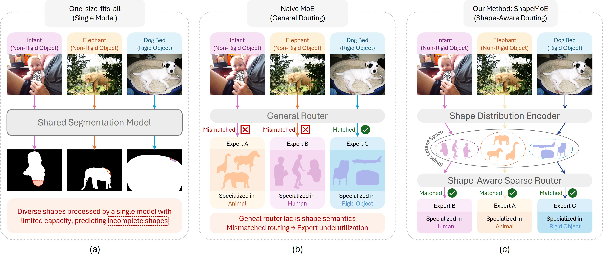
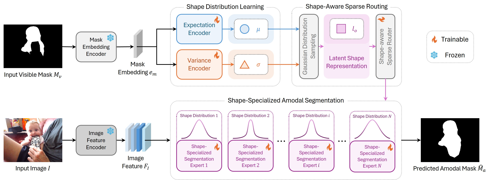
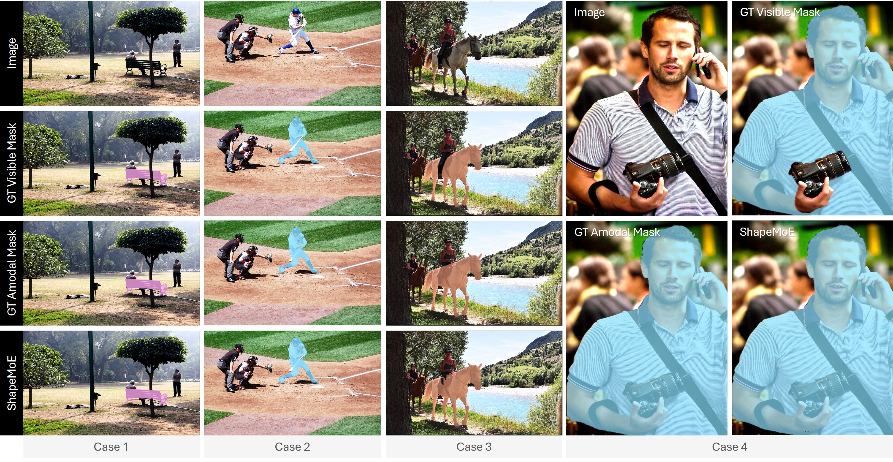

Preprint
Shape Distribution Matters: Shape-specific Mixture-of-Experts for Amodal Segmentation under Diverse Occlusions
1Nanyang Technological University, Singapore
2School of Computer Science, Peking University, Beijing, China
3National Key Laboratory for Multimedia Information Processing, Peking University, Beijing, China
4National Engineering Research Center of Visual Technology, Peking University, Beijing, China
5Nanjing University of Information Science and Technology, China
6Department of Electrical and Electronic Engineering, Yonsei University, Korea
*Corresponding author
Abstract
Learning the shape behind the occlusion.
Amodal segmentation targets to predict complete object masks, covering both visible and occluded regions. This task poses significant challenges due to complex occlusions and extreme shape variation, from rigid furniture to highly deformable clothing. Existing one-size-fits-all approaches rely on a single model to handle all shape types, struggling to capture and reason about diverse amodal shapes due to limited representation capacity. A natural solution is to adopt a Mixture-of-Experts (MoE) framework, assigning experts to different shape patterns. However, naively applying MoE without considering the object's underlying shape distribution can lead to mismatched expert routing and insufficient expert specialization, resulting in redundant or underutilized experts. To deal with these issues, we introduce ShapeMoE, a shape-specific sparse Mixture-of-Experts framework for amodal segmentation. The key idea is to learn a latent shape distribution space and dynamically route each object to a lightweight expert tailored to its shape characteristics. Specifically, ShapeMoE encodes each object into a compact Gaussian embedding that captures key shape characteristics. A Shape-Aware Sparse Router then maps the object to the most suitable expert, enabling precise and efficient shape-aware expert routing. Each expert is designed as lightweight and specialized in predicting occluded regions for specific shape patterns. ShapeMoE offers well interpretability via clear shape-to-expert correspondence, while maintaining high capacity and efficiency. Experiments on COCOA-cls, KINS, and D2SA show that ShapeMoE consistently outperforms state-of-the-art methods, especially in occluded region segmentation.
01 · Motivation
Different shapes need different experts.

02 · Method
Shape-aware sparse routing.

03 · Results
Complete shapes across complex occlusions.

Citation
BibTeX
@inproceedings{li2025shapemoe,
title={Shape Distribution Matters: Shape-specific Mixture-of-Experts for Amodal Segmentation under Diverse Occlusions},
author={Li, Zhixuan and Liu, Yujia and Hui, Chen and Lee, Jeonghaeng and Lee, Sanghoon and Lin, Weisi},
booktitle={arXiv:2508.01664},
year={2025}
}